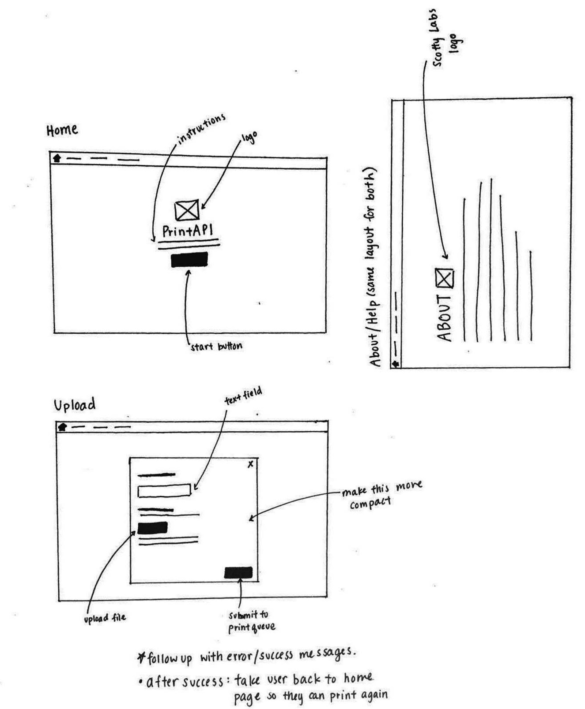

PRINTAPI
nov 2016–present
overview—
user interface/experience, mobile, front-end development
introduction—
I am a member of a club at Carnegie Mellon University called ScottyLabs that devotes itself to helping students learn and explore topics in technology. In the club, I often work on the branding and promotional materials.
At CMU, students must install specific print softwares in order to send documents to the print queues to be printed. To simplify this process and make printing more accessible, the club has been working on the PrintAPI, a web app where students can simply upload files straight to the print queue from any device. This is an on-going project.
process—
I was asked to design and code the user interface of the web app. For the initial stages, the goal was to keep things simple. When I was sketching out my ideas, I considered the following:
- The user interface should be straightforward, easy to navigate through, and concise. The purpose of the application is its convenience, so the design should properly reflect that.
- Both the code and the visual design should be flexible to change. I was told by individuals working on the back-end of the software not to worry about creating a mobile app interface. Given that users will probably access the application on their mobile devices, I decided to make sure that the design could easily work for smartphones. The tech team would only have to make a few scaling adjustments, and the design would still work well on mobile devices
- The project is still in development. As the project continues to progress and the web application gets more features, the user interface will need to tweaked, adjusted, and redesigned. For example, the web app will likely include a built-in print dialogue in the future. Currently, we are planning to build an iOS application as well.
user stories—
To better understand how students at CMU would need this and use the application, I came up with personas.
Bill is junior studying at CMU. Since freshman year (like all the other students), he installed and used the print driver software that the school provided. However, recently, the software on Bill's computer no longer works and printing documents has become quite inconvenient. Instead of trying to reinstall the software or going to printing stations around campus, Bill can simply access the web app online and get his documents sent to the print queue.
Likewise, Jane is a freshman student who often procrastinates and forgets to print her homework until the moment before its due. Rather than pulling out her laptop to send her homework to the printing system, she can simply use her phone to get the job done with less hassle.
wireframes—
